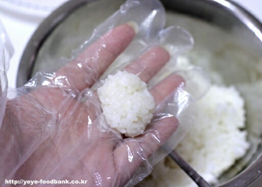
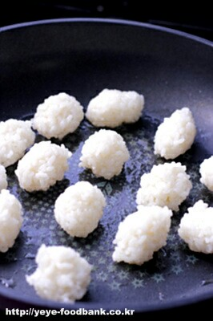
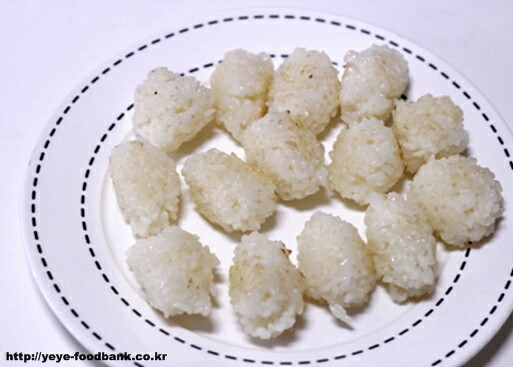
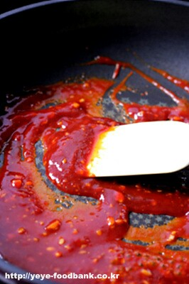
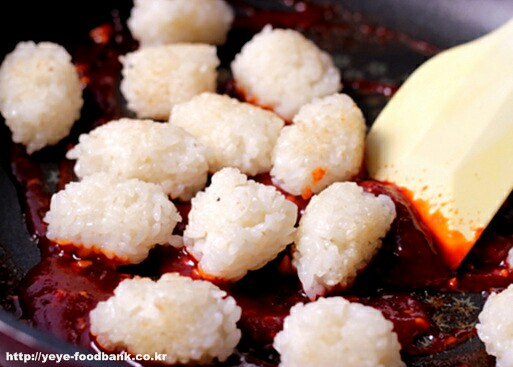

Ingredients
양념
- 다진마늘1/3숟갈
- 고추장1숟갈
- 간장1/2숟갈
- 올리고당2숟갈
- 케첩1숟갈
- 생강술2숟갈
- 물2숟갈
- 전분가루1/3숟갈
Steps
- 밥을 반숟갈 정도의 양을 덜어내어 손으로 조물조물 뭉쳐서 동그랗게 모양을 만들어 줍니다.

- 달군팬에 오일을 둘러 중불에서 달구어준후 뭉친 밥을 올려 사방으로 굴려가며 노릇노릇 까실까실하게 구워주세요.

- 구워낸 밥은 접시에 덜어내어 줍니다.

- 팬에 양념 재료를 모두 넣고 섞은후 중불에서 바글바글 끓기 시작하면 주걱으로 양념재료를 잘 섞은 후 불을 꺼주세요.

- 구워놓은 밥을 넣고 주걱으로 섞어 양념장을 입혀줍니다.

- 마지막으로 다진 땅콩을 뿌려주면 매콤밥강정 완성.